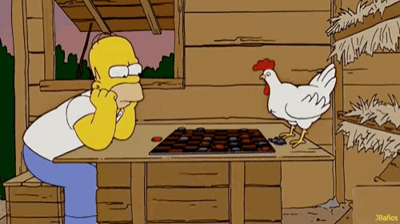

Welcome To Checkers Project!
In this project, we will implement the different elements that were seen during the lectures and labs. We will a create a website with both client side and server side, using a relational database managnement system. HTML with forms, CSS, JavaScript, and PHP will be used to build a dynamic website. This project will become a meter to evaluate our learning through out the whole semester for CSCI 130-Web Programming.
